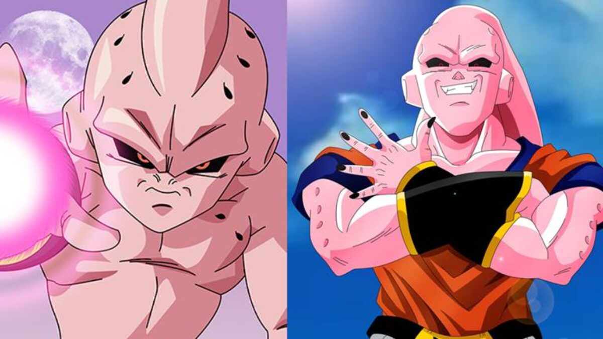
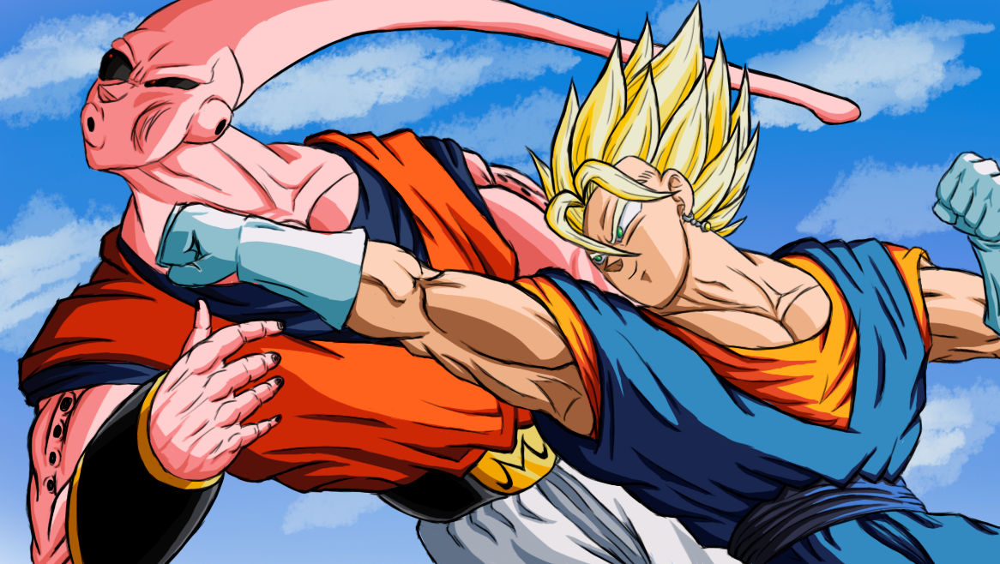

A saga começa com a descoberta do poderoso feiticeiro Babidi, que planeja usar a energia negativa da Terra para ressuscitar o lendário demônio Majin Boo. Babidi controla a mente de vários personagens, incluindo Vegeta, transformando-os em seus servos malignos.
Goku e seus amigos lutam contra os servos de Babidi, incluindo Dabura, o rei dos demônios, e o próprio Vegeta. Durante as batalhas, a energia negativa absorvida por Majin Boo é usada para transformá-lo em diferentes formas cada vez mais poderosas.
Majin Boo se revela um inimigo extremamente perigoso, com habilidades regenerativas e poderes impressionantes. Ele começa a espalhar o caos e a destruição, ameaçando não apenas a Terra, mas todo o universo.
Enquanto isso, Goku e Vegeta se preparam para enfrentar Majin Boo em uma luta final. Eles se fundem temporariamente usando a Dança da Fusão e se tornam Vegito, um guerreiro incrivelmente poderoso. No entanto, mesmo Vegito não consegue derrotar Boo.
Com a situação cada vez mais desesperadora, Goku tem a ideia de usar a técnica de absorção de Boo contra ele mesmo. Ele faz com que Boo o absorva, entrando em seu corpo para libertar seus amigos que estavam presos lá dentro. Goku consegue resgatá-los, mas acaba sendo absorvido por Boo também.
Dentro do corpo de Boo, Goku encontra uma versão benigna e infantil de Majin Boo, chamada de Boo Gordo ou Boo Bom. Goku trabalha para despertar a bondade dentro de Boo Bom, enquanto a batalha continua do lado de fora.
A luta final ocorre entre Boo Bom e Boo Mal, a forma maligna de Majin Boo. Com a ajuda dos espíritos de Gotenks e Gohan, Goku e todos os seres humanos da terra que deliberadamente emprestaram parte de seu KI para goku consegue criar uma Genki Dama gigante para destruir Boo Mal de uma vez por todas.
Após a derrota de Boo Mal, Boo Bom é livre e passa a viver pacificamente com seus novos amigos. A saga de Majin Boo termina com Goku se despedindo de seus amigos e partindo para treinar e se preparar para novas aventuras.

